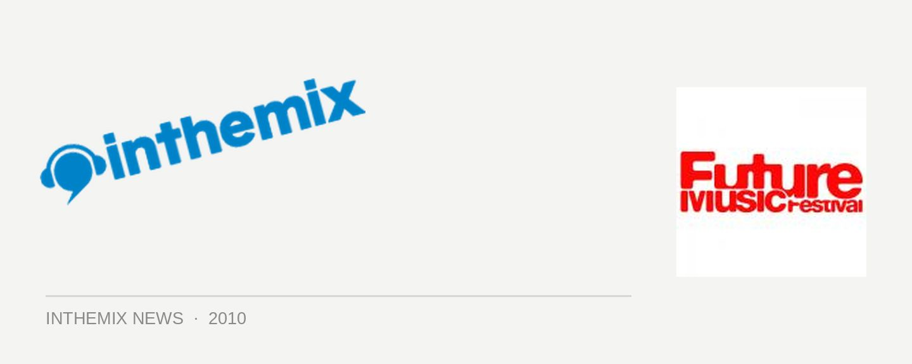

Future Music Festival adds Way Out West, Spank Rock & more to lineup
As if the lineup for this year’s Future Music Festival wasn’t colossal enough, and excitement levels weren’t already redlining with last week’s revelation that trance titans Above & Beyond would be hosting their own arena on the tour this year (not to mention that the Sydney show has sold out). Now comes the news that an assortment of acts will be joining the lineup when it fires up later this month, not the least of who are Way Out West and Spank Rock among others. How’s that for giving us even more to look forward to?
Nick Warren himself revealed late last year to ITM that he and Jody Wisternoff were hoping to bring their critically acclaimed We Love Machine album (a high ranker in ITM Top 20 Releases of 2009!) to the crowds at Future Music Festival in 2010. It’s now become a reality, and joining them on the second-round lineup will be Philadelphia electro-rap sensation Spank Rock, as well as a selection of local players that includes Bag Raiders, Operator Please, Space Invadas and more.
The other notable additions to the second-round lineup are Super8 & Tab, Mat Zo and Canberra maestro Jaytech, who it’s now confirmed will all be providing able assistance to Above & Beyond when they host their own arena on the tour.
Check out the ‘new and improved’ lineup for Future Music Festival 2010:
The Prodigy
Empire Of The Sun
Franz Ferdinand
David Guetta
Booka Shade
Erick Morillo
John Digweed
Sven Vath
Above & Beyond
Dubfire
Boys Noize
Does It Offend You, Yeah?
Spankrock
Way Out West
Operator Please
Bag Raiders
Space Invadas
Jump Jump Dance Dance
Super8 & Tab
Jaytech
Mat Zo
For more Future Music Festival info, shoot over to ITM’s Festival Page, and check out full national dates below:
Sat 27th Feb – Future Music Festival, Brisbane
Sun 28th Feb – Future Music Festival, Perth
Sat 6th March – Future Music Festival, Sydney
Sun March 7th – Future Music Festival, Melbourne
Mon March 8th – Future Music Festival, Adelaide